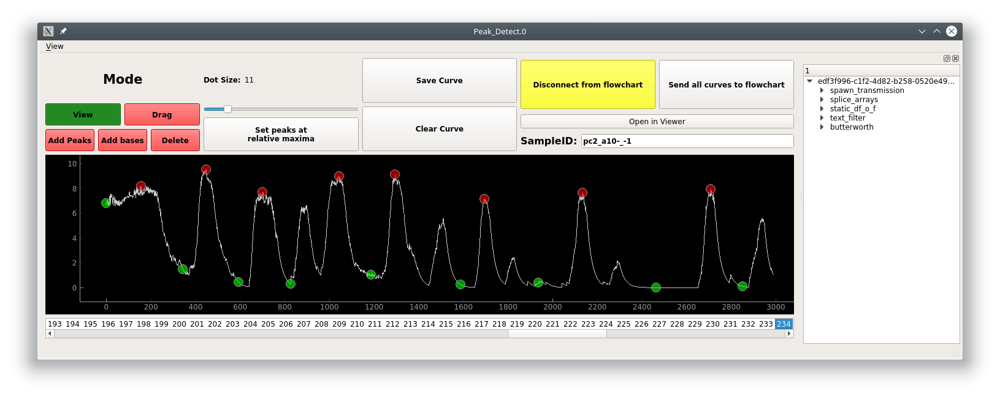

Peak Editor¶
Visualize and edit detected peaks & bases. This GUI is accessible through the PeakDetect node.
Usage¶
- Optimize your peaks/bases detection through the datastreams that feed into the Derivative and Normalize terminals of the parent PeakDetect node. For example, play with filtering parameters for the ButterWorth node or SavitzkyGolay node.
- Optimize amplitude thresholds of the parent PeakDetect node.
- Disconnect from the flowchart (see below).
- Edit your peaks/bases
- Click “Send all curves to flowchart” (see below) to set the edited data as the output of the parent PeakDetect node.
Layout¶
{kind=link}
Bottom¶
List of curves from the Transmission inputted to the Curve or PB_Input terminal. See PeakDetect node
Top¶
Mode buttons: Set the current interactive mode for mouse events.
View: Just view, pan, and zoom the plot.
Drag: Click and drag peaks/bases along the curve.
Add Peak/Base: Click to add a peak/base onto the curve.
Delete: Delete a peak or base.
Dot Size: Move the slider to change the size of the dots representing peaks/bases.
Set Peaks at relative maxima: Not implemented yet.
Save Curve: Save the current curve. A curve auto-saved when you switch to another one.
Clear Curve: Not implemented.
Disconnect from flowchart: Disconnect the GUI from changes in the flowchart. Edits to the peaks/bases will be lost if this GUI is not disconnected while changes occur in the flowchart.
Send all curves to flowchart: Set the edited data as the output of the parent PeakDetect node
Open in viewer: Open the parent Sample of this curve in a Viewer.
Right¶
History Tree Widget